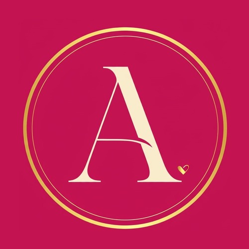
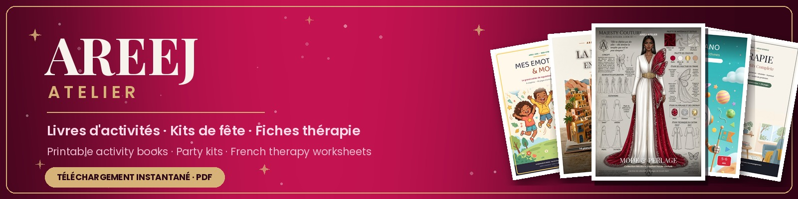

📦 PACK ETSY READY
AreejAtelier · 6 listings de lancement — tout est prêt à copier-coller
💡 Pour chaque listing : ① Copie le TITRE → ② mets le PRIX → ③ colle les TAGS (un par un, séparés par des virgules) → ④ copie la DESCRIPTION → ⑤ télécharge les IMAGES et uploade-les dans l'ordre (01 = principale) → ⑥ uploade les PDF dans « Digital files ».
⚠️ Type de listing : Digital download. Lancer avec le MEGA Bundle en premier !
⚠️ Type de listing : Digital download. Lancer avec le MEGA Bundle en premier !
🎀 Logo & Bannière de la boutique
ICÔNE DE BOUTIQUE (500×500) — Shop manager → Paramètres → Infos & apparence

⬇GRANDE BANNIÈRE (1600×400)

⬇🧰 MEGA Bundle — La Trousse Complète (210 pages)
📌 TITRE
Therapy Worksheets French Bundle 210 Pages | Fiches Thérapie TCC DBT en Français | Colère, Émotions Enfants | Thérapeute PDF Imprimable
💰 PRIX
12,99 € (barré 25,98 € — promo -50%)
🏷️ 13 TAGS (coller un par un)
fiches therapie, tcc francais, therapy worksheets, feuille de travail, psychologue outils, gestion colere, emotions enfants, cahier therapie pdf, french therapy, dbt skills francais, sante mentale pdf, therapist bundle, regulation emotion
📝 DESCRIPTION
LA TROUSSE COMPLÈTE DU THÉRAPEUTE — 210 pages en français, prêtes à imprimer 🇫🇷 Vous cherchez des ressources thérapeutiques SÉRIEUSES, BELLES et EN FRANÇAIS ? Ce bundle réunit tout l'atelier santé mentale AREEJ : 3 cahiers professionnels, 210 pages de fiches infographiques illustrées — zéro page de remplissage. ───────────── 📘 CAHIER 1 — LA BOÎTE À OUTILS THÉRAPIE (60 fiches) Psychoéducation (fenêtre de tolérance, réponses fight-flight-freeze-fawn, positivité toxique) · Outils TCC (modèle A-B-C, 10 distorsions cognitives, enquête des preuves, journal des pensées) · Outils DBT (esprit sage, STOP, TIPP) · Pleine conscience · Fiches de séance. 📙 CAHIER 2 — GESTION DE LA COLÈRE, CBT (70 pages) 10 modules guidés : cycle de la colère, thermomètre, déclencheurs, respiration carrée & 4-7-8, détente musculaire progressive, restructuration des pensées, communication assertive, plan anti-rechute. Ados & adultes. 📗 CAHIER 3 — MES ÉMOTIONS & MOI, KIDS (80 pages) Régulation émotionnelle 5-11 ans, 100% illustrée avec mascottes cartoon : stress-o-mètre, technique de la tortue, roue des émotions, coin calme, défis de la semaine. Les enfants ADORENT. ───────────── ✅ POUR QUI ? • Thérapeutes, psychologues & coachs — usage avec vos clients AUTORISÉ, impression illimitée • Parents — accompagnez votre enfant pas à pas • Enseignants — ateliers émotions clé en main • Travail sur soi — la TCC/DBT enfin claire, en français 📦 VOUS RECEVEZ • 3 fichiers PDF haute résolution (A4, compatibles US Letter) • 210 pages au total • Téléchargement instantané après paiement 🖨️ CONSEIL D'IMPRESSION Papier 80-100 g, noir & blanc possible mais la couleur met en valeur les fiches. Imprimez une fiche, un module ou le cahier entier. ⚠️ IMPORTANT Produit 100% numérique — aucun envoi postal. Usage personnel et professionnel (séances avec clients) autorisé ; revente ou partage des fichiers interdit. Ce matériel soutient le travail thérapeutique mais ne remplace pas un suivi médical. 💚 AREEJ ATELIER — ressources thérapeutiques en français. Ajoutez la boutique à vos favoris : la collection « Boîte à Outils du Thérapeute » s'agrandit chaque mois (Vol. 1 Anxiété, Vol. 2 Dépression déjà disponibles, Vol. 3 Estime de soi bientôt).
🖼️ IMAGES DU LISTING (10) — télécharger puis uploader dans l'ordre


📄 FICHIERS NUMÉRIQUES (à uploader dans "Digital files")
📘 La Boîte à Outils Thérapie (60 fiches)
📌 TITRE
Fiches Thérapie en Français 60 Pages | TCC DBT Pleine Conscience PDF | French Therapy Worksheets Bundle | Outils Psychologue Imprimables A4
💰 PRIX
6,99 € (barré 13,98 € — promo -50%)
🏷️ 13 TAGS (coller un par un)
fiches therapie, tcc francais, outils psychologue, therapy worksheets, dbt skills, pleine conscience, psychoeducation, feuille de travail, sante mentale pdf, french therapy, fiche seance, therapie pdf, coach outils
📝 DESCRIPTION
LA BOÎTE À OUTILS THÉRAPIE — 60 fiches professionnelles en français 🇫🇷 Le classeur de référence pour thérapeutes, coachs et travail sur soi : 10 sections, 60 fiches infographiques illustrées, prêtes à imprimer. AU PROGRAMME • Psychoéducation : fenêtre de tolérance, réponses fight-flight-freeze-fawn, positivité toxique • Outils TCC : modèle A-B-C, 10 distorsions cognitives, enquête des preuves, journal des pensées • Outils DBT : esprit sage, compétence STOP, tolérance à la détresse • Pleine conscience : ancrages, respirations guidées • Fiches de séance prêtes à donner entre deux rendez-vous VOUS RECEVEZ : 1 PDF haute résolution, A4 (compatible US Letter), 60 pages, téléchargement instantané, impression illimitée. Usage professionnel avec vos clients AUTORISÉ. 💡 ÉCONOMISEZ : ce cahier est inclus dans « La Trousse Complète du Thérapeute » (210 pages, 3 cahiers) — voir la boutique. ⚠️ Produit 100% numérique. Soutient le travail thérapeutique mais ne remplace pas un suivi médical. Revente/partage des fichiers interdit.
🖼️ IMAGES DU LISTING (7) — télécharger puis uploader dans l'ordre


📄 FICHIERS NUMÉRIQUES (à uploader dans "Digital files")
📙 Gestion de la Colère CBT (70 pages)
📌 TITRE
Cahier Gestion de la Colère TCC 70 Pages PDF | Anger Management Workbook French | Ados Adultes | Fiches Thérapie Colère Imprimables A4
💰 PRIX
6,99 € (barré 13,98 € — promo -50%)
🏷️ 13 TAGS (coller un par un)
gestion colere, anger management, cahier tcc, colere ados, therapie colere, cbt francais, fiches therapie, regulation emotion, workbook french, sante mentale pdf, exercice colere, impulsivite, therapy worksheets
📝 DESCRIPTION
GESTION DE LA COLÈRE — le cahier CBT complet, 70 pages en français 🇫🇷 Un vrai parcours guidé en 10 modules (pas des fiches en vrac), basé sur la thérapie cognitive et comportementale. Pour ados et adultes. LES 10 MODULES • 1-2 Comprendre : cycle de la colère, thermomètre, réponses de survie • 3 Déclencheurs : carte personnelle, journal 7 jours, signaux d'alerte • 4 Calmer le corps : respiration carrée, 4-7-8, détente musculaire, ancrage 5-4-3-2-1 (+ zelliges anti-stress à colorier) • 5-6 De la réaction à la réponse : pause S.T.O.P., filtre de décision • 7-8 Pensées : 8 distorsions cognitives, modèle A-B-C • 9-10 Communication assertive + plan de prévention des rechutes VOUS RECEVEZ : 1 PDF haute résolution, A4 (compatible US Letter), 70 pages, téléchargement instantané, impression illimitée. Usage pro avec vos clients AUTORISÉ. 💡 ÉCONOMISEZ : inclus dans « La Trousse Complète du Thérapeute » (210 pages) — voir la boutique. ⚠️ Produit 100% numérique. Ne remplace pas un suivi médical. Revente/partage interdit.
🖼️ IMAGES DU LISTING (7) — télécharger puis uploader dans l'ordre


📄 FICHIERS NUMÉRIQUES (à uploader dans "Digital files")
📗 Mes Émotions & Moi — KIDS (80 pages)
📌 TITRE
Cahier Émotions Enfant 80 Pages PDF | Régulation Émotionnelle 5-11 Ans | Kids Feelings Workbook French | Gestion Stress Colère Enfant A4
💰 PRIX
6,99 € (barré 13,98 € — promo -50%)
🏷️ 13 TAGS (coller un par un)
emotions enfants, regulation emotion, cahier enfant pdf, gestion stress kids, colere enfant, feelings workbook, emotions maternelle, psychologue enfant, activite emotions, kids therapy, parentalite outils, ecole emotions, mindfulness enfant
📝 DESCRIPTION
MES ÉMOTIONS & MOI — le grand cahier KIDS, 80 pages 100% illustrées 🌈 La régulation émotionnelle que les enfants ADORENT : 8 chapitres guidés par des mascottes cartoon adorables, pour les 5-11 ans. À la maison, à l'école ou en cabinet. LES 8 CHAPITRES • Le stress : stress-o-mètre, ballon des soucis, respiration de l'étoile • Se calmer tout seul : technique de la tortue, coin calme, défi de la semaine • Tout sur les émotions : roue à colorier, journal, jeu de mime en famille • Mon cerveau : le sage, l'alarme et le gardien, le couvercle qui saute • Mes pensées : pensées soleil vs orage, le détective, boîte à inquiétudes • Pleine conscience, confiance en soi & rituels du calme VOUS RECEVEZ : 1 PDF haute résolution, A4 (compatible US Letter), 80 pages, téléchargement instantané, impression illimitée (fratrie, classe, patientèle). 💡 ÉCONOMISEZ : inclus dans « La Trousse Complète du Thérapeute » (210 pages) — voir la boutique. ⚠️ Produit 100% numérique. Revente/partage interdit.
🖼️ IMAGES DU LISTING (7) — télécharger puis uploader dans l'ordre


📄 FICHIERS NUMÉRIQUES (à uploader dans "Digital files")
🌊 Vol.1 — Gérer l'Anxiété (40 fiches)
📌 TITRE
Fiches Anxiété TCC 40 Pages PDF Français | Anxiety Workbook French | Respiration Ancrage Exposition | Outils Thérapeute Vol 1 Imprimable
💰 PRIX
5,99 € (barré 11,98 € — promo -50%)
🏷️ 13 TAGS (coller un par un)
anxiete fiches, gerer anxiete, tcc anxiete, anxiety workbook, crise angoisse, respiration 478, ancrage 54321, therapie anxiete, french therapy, sante mentale pdf, ruminations, exposition douce, fiches therapeute
📝 DESCRIPTION
GÉRER L'ANXIÉTÉ — Volume 1 de la collection « Boîte à Outils du Thérapeute » 🌊 40 fiches illustrées en 4 parties progressives : le protocole anxiété complet, en français clair. LES 4 PARTIES • 1 COMPRENDRE : cycle de l'anxiété, déclencheurs, échelle personnelle 0-10, checklist des symptômes • 2 CALMER LE CORPS : respiration carrée, 4-7-8, cohérence cardiaque, ancrage 5-4-3-2-1, 10 ancrages physiques • 3 TRAVAILLER LES PENSÉES (TCC) : catastrophisme, journal des pensées, 6 distorsions, questions socratiques, temps des inquiétudes • 4 AFFRONTER : surfer la vague d'anxiété, exposition progressive et douce VOUS RECEVEZ : 1 PDF haute résolution, A4 (compatible US Letter), 40 fiches, téléchargement instantané, impression illimitée. Usage pro AUTORISÉ. 💡 LA SÉRIE : Vol.2 Vaincre la Dépression déjà disponible — un volume ciblé par thème, nouveautés chaque mois. Ajoutez la boutique à vos favoris ! ⚠️ Produit 100% numérique. Ne remplace pas un suivi médical. Revente/partage interdit.
🖼️ IMAGES DU LISTING (7) — télécharger puis uploader dans l'ordre


📄 FICHIERS NUMÉRIQUES (à uploader dans "Digital files")
🌤 Vol.2 — Vaincre la Dépression (40 fiches)
📌 TITRE
Fiches Dépression TCC 40 Pages PDF Français | Depression Workbook French | Activation Comportementale | Outils Thérapeute Vol 2 Imprimable
💰 PRIX
5,99 € (barré 11,98 € — promo -50%)
🏷️ 13 TAGS (coller un par un)
depression fiches, activation comport, tcc depression, depression workbook, humeur journal, triade de beck, therapie depression, french therapy, sante mentale pdf, motivation outils, critique interieur, regle 5 minutes, fiches therapeute
📝 DESCRIPTION
VAINCRE LA DÉPRESSION — Volume 2 de la collection « Boîte à Outils du Thérapeute » 🌅 40 fiches illustrées basées sur les 2 approches les plus validées : l'activation comportementale et la TCC. LES 3 PARTIES • 1 COMPRENDRE : tristesse vs dépression, la spirale, checklist des symptômes, échelle d'humeur 0-10, drains & recharges, triade de Beck • 2 SE REMETTRE EN MOUVEMENT : l'action précède la motivation, menus plaisir & maîtrise, règle des 5 minutes, planning hebdo, montagne en marches, journal d'activation • 3 TRAVAILLER LES PENSÉES : lunettes grises, critique intérieur, journal TCC complet VOUS RECEVEZ : 1 PDF haute résolution, A4 (compatible US Letter), 40 fiches, téléchargement instantané, impression illimitée. Usage pro AUTORISÉ. 💡 LA SÉRIE : Vol.1 Gérer l'Anxiété déjà disponible — ajoutez la boutique à vos favoris, nouveautés chaque mois. ⚠️ Produit 100% numérique. Ne remplace pas un suivi médical ni un traitement. Si vous traversez une crise, contactez un professionnel de santé. Revente/partage interdit.
🖼️ IMAGES DU LISTING (7) — télécharger puis uploader dans l'ordre


📄 FICHIERS NUMÉRIQUES (à uploader dans "Digital files")
AREEJ ATELIER · AreejAtelier sur Etsy · conçu au Maroc 🇲🇦